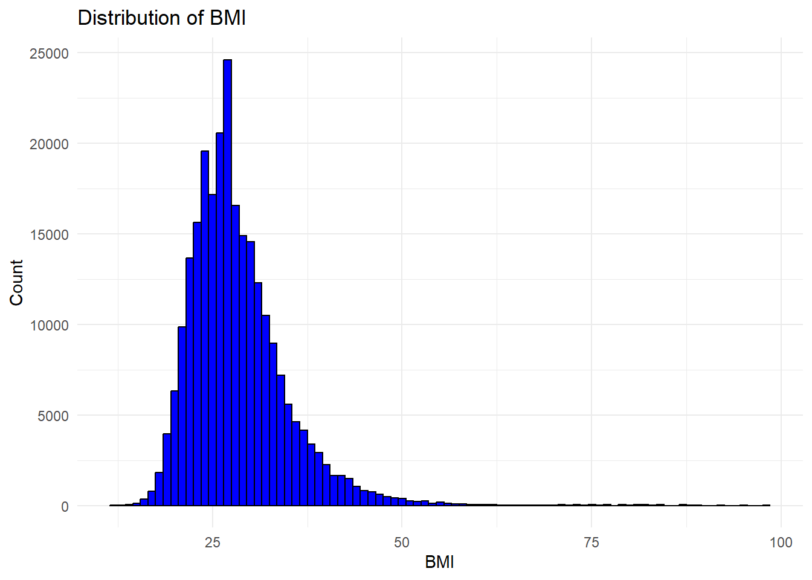
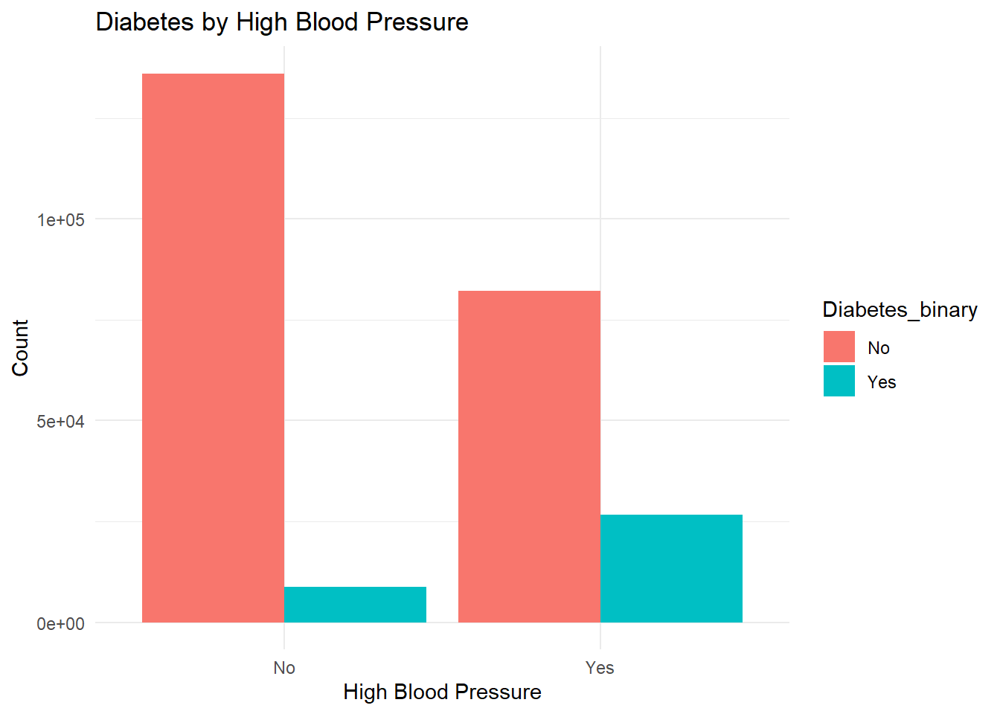
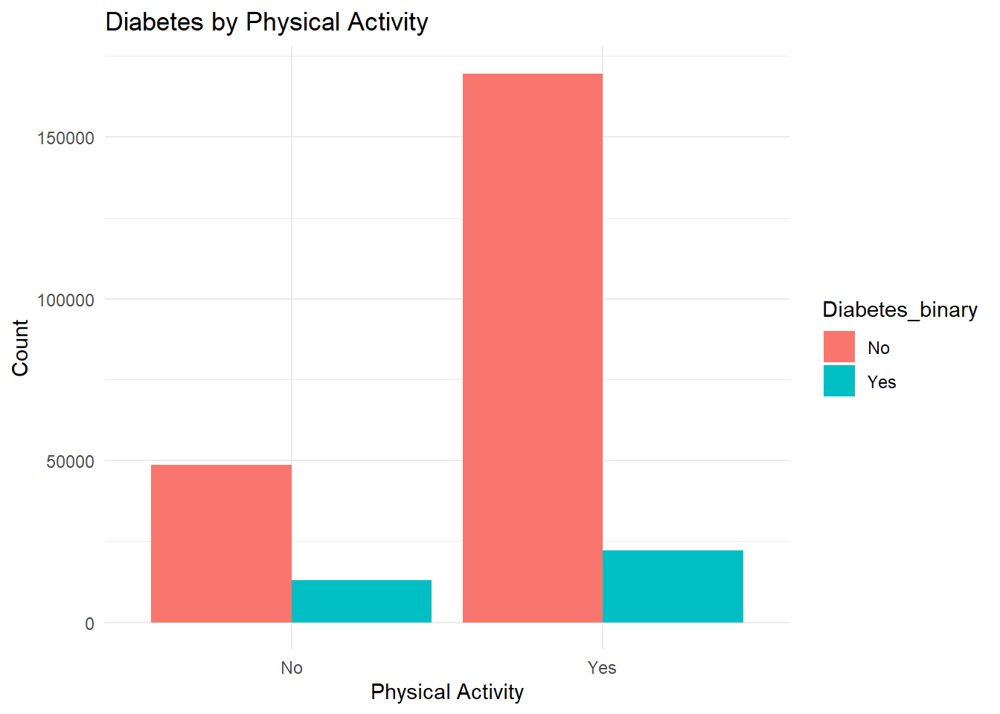
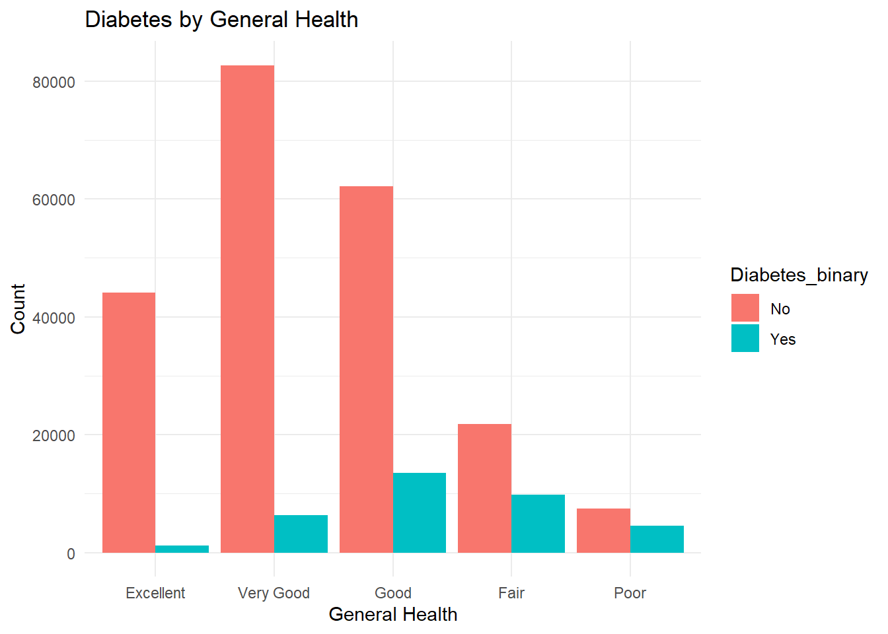

This project involves the exploration and analysis of a health-related data set to understand the factors associated with diabetes. The data set comprises several health indicators and demographic variables that could potentially influence the incidence of diabetes. The primary goal is to perform an Exploratory Data Analysis (EDA) to uncover patterns, relationships, and insights, which will subsequently aid in building predictive models.
Dataset Description
The dataset includes the following variables:
Dataset Description
Variable
Description
Diabetes_binary
This is the response variable indicating whether an individual has diabetes (1) or not (0).
HighBP
A binary variable indicating if the individual has high blood pressure (1) or not (0).
HighChol
A binary variable indicating if the individual has high cholesterol (1) or not (0).
CholCheck
A binary variable indicating if the individual has had a cholesterol check (1) or not (0).
BMI
Body Mass Index, a numerical value representing the individual’s body mass.
Smoker
A binary variable indicating if the individual is a smoker (1) or not (0).
Stroke
A binary variable indicating if the individual has had a stroke (1) or not (0).
HeartDiseaseorAttack
A binary variable indicating if the individual has had heart disease or a heart attack (1) or not (0).
PhysActivity
A binary variable indicating if the individual engages in physical activity (1) or not (0).
Fruits
A binary variable indicating if the individual consumes fruits regularly (1) or not (0).
Veggies
A binary variable indicating if the individual consumes vegetables regularly (1) or not (0).
HvyAlcoholConsump
A binary variable indicating if the individual consumes alcohol heavily (1) or not (0).
AnyHealthcare
A binary variable indicating if the individual has access to any form of healthcare (1) or not (0).
NoDocbcCost
A binary variable indicating if the individual has not seen a doctor due to cost (1) or not (0).
GenHlth
A numerical variable indicating the individual’s general health on a scale from 1 to 5.
MentHlth
A numerical variable representing the number of days the individual has experienced poor mental health in the past month.
PhysHlth
A numerical variable representing the number of days the individual has experienced poor physical health in the past month.
DiffWalk
A binary variable indicating if the individual has difficulty walking (1) or not (0).
Sex
A binary variable indicating the sex of the individual (1 for male, 0 for female).
Age
A numerical variable indicating the age of the individual.
Education
A numerical variable representing the highest level of education attained by the individual.
Income
A numerical variable indicating the income level of the individual.
Purpose of EDA
The Exploratory Data Analysis (EDA) will focus on understanding the distribution and relationships between the variables in the dataset. The key objectives include:
Descriptive Statistics:
Summarizing the main features of the dataset, including central tendencies and variances.
Data Visualization:
Creating visual representations to identify patterns, trends, and outliers.
Correlation Analysis:
Investigating the relationships between the predictor variables and the response variable (Diabetes_binary).
Identification of Key Factors:
Determining which factors are most strongly associated with diabetes.
Ultimate Goal
The ultimate goal of this project is to develop a predictive model that can accurately classify individuals as diabetic or non-diabetic based on the available health indicators and demographic factors. The insights gained from the EDA will guide the feature selection and modeling process, enhancing the model’s predictive performance and interpretability.
Data
Importing Data
# Importing necessary librarieslibrary(dplyr)
Attaching package: 'dplyr'
The following objects are masked from 'package:stats':
filter, lag
The following objects are masked from 'package:base':
intersect, setdiff, setequal, union
library(readr)# Use a relative path to import the datadata <-read_csv("diabetes_binary_health_indicators_BRFSS2015.csv")
Rows: 253680 Columns: 22
── Column specification ────────────────────────────────────────────────────────
Delimiter: ","
dbl (22): Diabetes_binary, HighBP, HighChol, CholCheck, BMI, Smoker, Stroke,...
ℹ Use `spec()` to retrieve the full column specification for this data.
ℹ Specify the column types or set `show_col_types = FALSE` to quiet this message.
# Display the first few rows of the datasethead(data)
# Checking for missing valuesmissing_data <-sapply(data, function(x) sum(is.na(x)))# Display the number of missing values for each variablemissing_data
Frequencies
.$Diabetes_binary
Type: Factor
Freq % Valid % Valid Cum. % Total % Total Cum.
----------- -------- --------- -------------- --------- --------------
No 218334 86.07 86.07 86.07 86.07
Yes 35346 13.93 100.00 13.93 100.00
<NA> 0 0.00 100.00
Total 253680 100.00 100.00 100.00 100.00
.$HighBP
Type: Factor
Freq % Valid % Valid Cum. % Total % Total Cum.
----------- -------- --------- -------------- --------- --------------
No 144851 57.10 57.10 57.10 57.10
Yes 108829 42.90 100.00 42.90 100.00
<NA> 0 0.00 100.00
Total 253680 100.00 100.00 100.00 100.00
.$HighChol
Type: Factor
Freq % Valid % Valid Cum. % Total % Total Cum.
----------- -------- --------- -------------- --------- --------------
No 146089 57.59 57.59 57.59 57.59
Yes 107591 42.41 100.00 42.41 100.00
<NA> 0 0.00 100.00
Total 253680 100.00 100.00 100.00 100.00
.$CholCheck
Type: Factor
Freq % Valid % Valid Cum. % Total % Total Cum.
----------- -------- --------- -------------- --------- --------------
No 9470 3.73 3.73 3.73 3.73
Yes 244210 96.27 100.00 96.27 100.00
<NA> 0 0.00 100.00
Total 253680 100.00 100.00 100.00 100.00
.$Smoker
Type: Factor
Freq % Valid % Valid Cum. % Total % Total Cum.
----------- -------- --------- -------------- --------- --------------
No 141257 55.68 55.68 55.68 55.68
Yes 112423 44.32 100.00 44.32 100.00
<NA> 0 0.00 100.00
Total 253680 100.00 100.00 100.00 100.00
.$Stroke
Type: Factor
Freq % Valid % Valid Cum. % Total % Total Cum.
----------- -------- --------- -------------- --------- --------------
No 243388 95.94 95.94 95.94 95.94
Yes 10292 4.06 100.00 4.06 100.00
<NA> 0 0.00 100.00
Total 253680 100.00 100.00 100.00 100.00
.$HeartDiseaseorAttack
Type: Factor
Freq % Valid % Valid Cum. % Total % Total Cum.
----------- -------- --------- -------------- --------- --------------
No 229787 90.58 90.58 90.58 90.58
Yes 23893 9.42 100.00 9.42 100.00
<NA> 0 0.00 100.00
Total 253680 100.00 100.00 100.00 100.00
.$PhysActivity
Type: Factor
Freq % Valid % Valid Cum. % Total % Total Cum.
----------- -------- --------- -------------- --------- --------------
No 61760 24.35 24.35 24.35 24.35
Yes 191920 75.65 100.00 75.65 100.00
<NA> 0 0.00 100.00
Total 253680 100.00 100.00 100.00 100.00
.$Fruits
Type: Factor
Freq % Valid % Valid Cum. % Total % Total Cum.
----------- -------- --------- -------------- --------- --------------
No 92782 36.57 36.57 36.57 36.57
Yes 160898 63.43 100.00 63.43 100.00
<NA> 0 0.00 100.00
Total 253680 100.00 100.00 100.00 100.00
.$Veggies
Type: Factor
Freq % Valid % Valid Cum. % Total % Total Cum.
----------- -------- --------- -------------- --------- --------------
No 47839 18.86 18.86 18.86 18.86
Yes 205841 81.14 100.00 81.14 100.00
<NA> 0 0.00 100.00
Total 253680 100.00 100.00 100.00 100.00
.$HvyAlcoholConsump
Type: Factor
Freq % Valid % Valid Cum. % Total % Total Cum.
----------- -------- --------- -------------- --------- --------------
No 239424 94.38 94.38 94.38 94.38
Yes 14256 5.62 100.00 5.62 100.00
<NA> 0 0.00 100.00
Total 253680 100.00 100.00 100.00 100.00
.$AnyHealthcare
Type: Factor
Freq % Valid % Valid Cum. % Total % Total Cum.
----------- -------- --------- -------------- --------- --------------
No 12417 4.89 4.89 4.89 4.89
Yes 241263 95.11 100.00 95.11 100.00
<NA> 0 0.00 100.00
Total 253680 100.00 100.00 100.00 100.00
.$NoDocbcCost
Type: Factor
Freq % Valid % Valid Cum. % Total % Total Cum.
----------- -------- --------- -------------- --------- --------------
No 232326 91.58 91.58 91.58 91.58
Yes 21354 8.42 100.00 8.42 100.00
<NA> 0 0.00 100.00
Total 253680 100.00 100.00 100.00 100.00
.$DiffWalk
Type: Factor
Freq % Valid % Valid Cum. % Total % Total Cum.
----------- -------- --------- -------------- --------- --------------
No 211005 83.18 83.18 83.18 83.18
Yes 42675 16.82 100.00 16.82 100.00
<NA> 0 0.00 100.00
Total 253680 100.00 100.00 100.00 100.00
.$Sex
Type: Factor
Freq % Valid % Valid Cum. % Total % Total Cum.
------------ -------- --------- -------------- --------- --------------
Female 141974 55.97 55.97 55.97 55.97
Male 111706 44.03 100.00 44.03 100.00
<NA> 0 0.00 100.00
Total 253680 100.00 100.00 100.00 100.00
.$GenHlth
Type: Factor
Freq % Valid % Valid Cum. % Total % Total Cum.
--------------- -------- --------- -------------- --------- --------------
Excellent 45299 17.86 17.86 17.86 17.86
Very Good 89084 35.12 52.97 35.12 52.97
Good 75646 29.82 82.79 29.82 82.79
Fair 31570 12.44 95.24 12.44 95.24
Poor 12081 4.76 100.00 4.76 100.00
<NA> 0 0.00 100.00
Total 253680 100.00 100.00 100.00 100.00
.$Education
Type: Factor
Freq % Valid % Valid Cum. % Total % Total Cum.
--------------------------- -------- --------- -------------- --------- --------------
Never attended school 174 0.069 0.069 0.069 0.069
Elementary 4043 1.594 1.662 1.594 1.662
Some High School 9478 3.736 5.399 3.736 5.399
High School Graduate 62750 24.736 30.134 24.736 30.134
Some College 69910 27.558 57.693 27.558 57.693
College Graduate 107325 42.307 100.000 42.307 100.000
<NA> 0 0.000 100.000
Total 253680 100.000 100.000 100.000 100.000
.$Income
Type: Factor
Freq % Valid % Valid Cum. % Total % Total Cum.
------------------------ -------- --------- -------------- --------- --------------
Less than $10,000 9811 3.87 3.87 3.87 3.87
$10,000 to $14,999 11783 4.64 8.51 4.64 8.51
$15,000 to $19,999 15994 6.30 14.82 6.30 14.82
$20,000 to $24,999 20135 7.94 22.75 7.94 22.75
$25,000 to $34,999 25883 10.20 32.96 10.20 32.96
$35,000 to $49,999 36470 14.38 47.33 14.38 47.33
$50,000 to $74,999 43219 17.04 64.37 17.04 64.37
$75,000 or more 90385 35.63 100.00 35.63 100.00
<NA> 0 0.00 100.00
Total 253680 100.00 100.00 100.00 100.00
The summary statistics provided insights into the central tendencies and variances of the numerical variables, such as BMI, Mental Health, Physical Health, and Age. The frequency tables for categorical variables showed the distribution of individuals across different health conditions and demographics.
Visualizations
Distribution of BMI
ggplot(data, aes(x = BMI)) +geom_histogram(binwidth =1, fill ="blue", color ="black") +theme_minimal() +labs(title ="Distribution of BMI", x ="BMI", y ="Count")

The histogram of BMI indicates that most individuals have a BMI between 20 and 40, with a peak around the 25-30 range. This suggests a concentration of individuals within the overweight and obese categories.
Diabetes by HighBP
ggplot(data, aes(x = HighBP, fill = Diabetes_binary)) +geom_bar(position ="dodge") +theme_minimal() +labs(title ="Diabetes by High Blood Pressure", x ="High Blood Pressure", y ="Count")

The bar plot revealed that individuals with high blood pressure are more likely to have diabetes. This aligns with medical literature that high blood pressure is a significant risk factor for diabetes.
Diabetes by Physical Activity
ggplot(data, aes(x = PhysActivity, fill = Diabetes_binary)) +geom_bar(position ="dodge") +theme_minimal() +labs(title ="Diabetes by Physical Activity", x ="Physical Activity", y ="Count")

The analysis showed that individuals who do not engage in physical activity have a higher prevalence of diabetes. This highlights the importance of physical activity in preventing diabetes.
Diabetes by General Health
ggplot(data, aes(x = GenHlth, fill = Diabetes_binary)) +geom_bar(position ="dodge") +theme_minimal() +labs(title ="Diabetes by General Health", x ="General Health", y ="Count")

The plot indicated that individuals with poorer general health are more likely to have diabetes. This suggests a strong relationship between overall health and the risk of diabetes.
These visualizations and summaries provide a comprehensive view of the data and highlight key factors associated with diabetes, which will inform the subsequent modeling process to predict diabetes based on these health indicators and demographic factors.